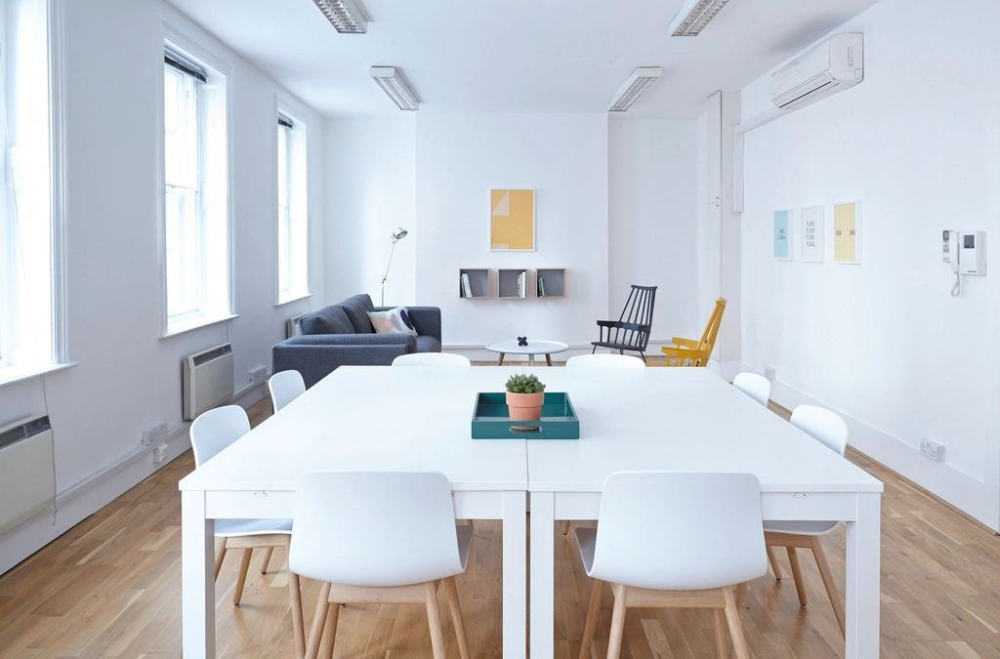
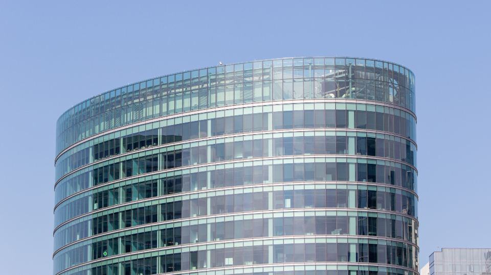
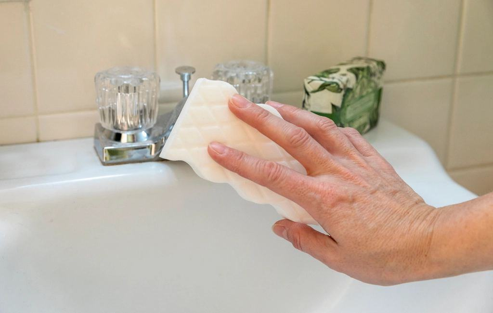
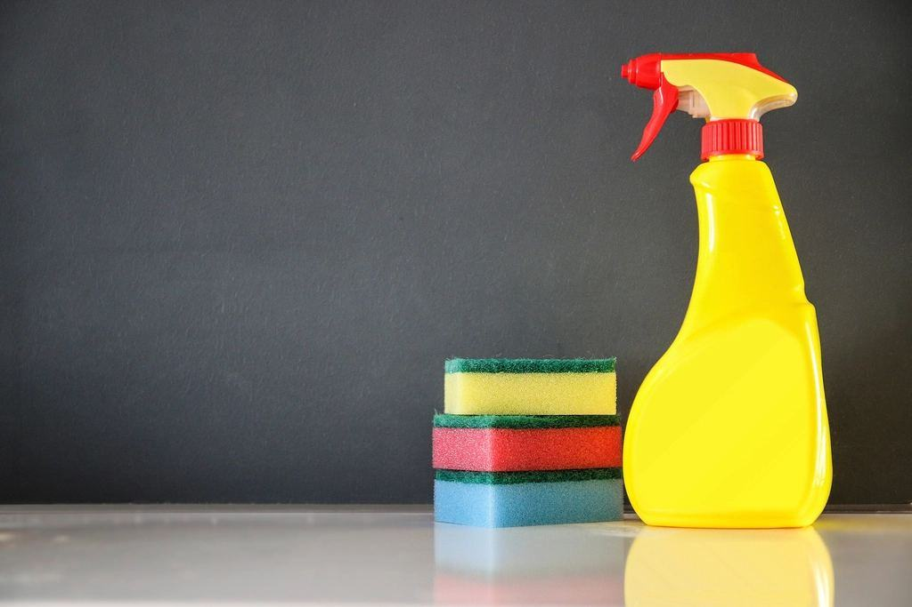
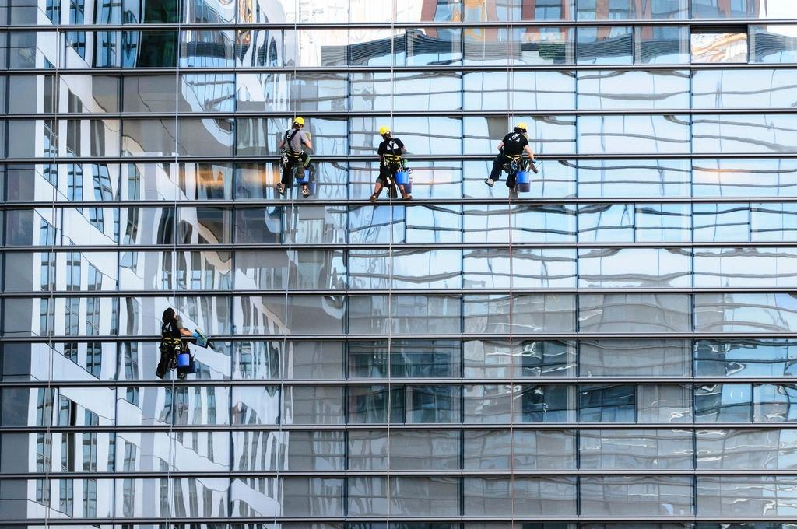
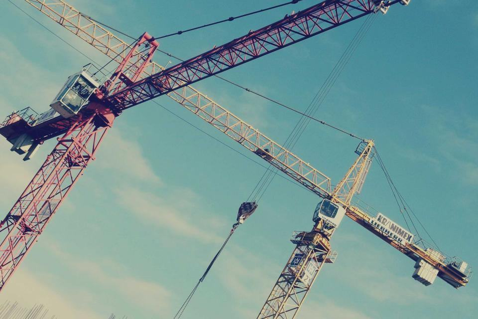

Tjänster
I dag har vi 61 anställda och arbetar nästan bara nattetid, i bagerier, mejerier, charkuterier, färdigmatsfabriker och ett äggpackeri. Vi följer kundernas HACCP-planer, tar egna ATP- och kontaktprov och står bredvid när revisorerna från BRC och IFS går igenom fabriken.
Vad produceras i er fabrik?

Bagerier och kafferep
Mjöldamm, deg och socker sätter sig i varje skarv. Vi torrengör först med dammsugare och skrapor och använder vatten bara där maskinerna tål det, så att mjöl inte blir klister i transportbanden.
Sex industribagerier i Kronoberg och Jönköpings län rengörs av oss varje natt.

Mejeri och chark
I våta processer arbetar vi med lågtrycksskum och alkaliska och sura medel i växelvis ordning för att få bort både fett, protein och kalk. Efter sköljning desinfekterar vi med perättiksyra.
Kontaktprov för listeria tas varje vecka på de punkter kunden har valt.

Allergener och produktbyten
När en linje går från nötbar till nötfri müsli måste rengöringen vara validerad. Vi följer kundens allergenprotokoll och tar ytprov med snabbtest innan produktionen får starta.
Varje allergenrengöring signeras av både vår arbetsledare och kundens skiftledare.

Produktionsstopp
Under sommar- och julstopp gör vi det som inte hinns med på en natt: takbalkar, kanaler, kylbatterier och golvbrunnar under maskinerna. Vi kan ha 25 personer på samma fabrik under ett stopp.
Stoppen planeras ett halvår i förväg tillsammans med kundens underhållsavdelning.
Från genomgång till godkänt prov
- 1
Fabriksgenomgång
Vi går igenom linjerna, er HACCP-plan och de punkter revisorn brukar granska.
- 2

Rengöringsinstruktion
Ni får en skriftlig instruktion per maskin med medel, koncentration, temperatur och verkningstid.
- 3

Nattskiftet startar
Teamet arbetar varje natt efter instruktionen och signerar varje moment.
- 4

Prov och rapport
ATP- och kontaktprov varje natt, och en månadsrapport till er kvalitetschef.
Hygien, kemi och behörighet
- HACCP-utbildad personalAlla tekniker utbildas i livsmedelshygien och HACCP-principerna före första natten.
- Stöd vid BRC och IFSVi dokumenterar rengöring och prover enligt de krav som BRCGS och IFS Food ställer på leverantörer.
- KemikaliehanteringArbetsledarna har utbildning i kemiska riskkällor och alla medel finns med säkerhetsdatablad på plats.
- Truck- och liftbehörighetStoppteamet har truckkort och utbildning för skylift och saxlift enligt AFS-föreskrifterna.